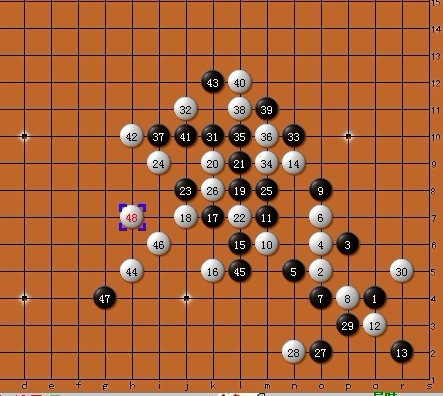

无禁手，实战对局，黑先如何胜？
首页
习题专区
#1 无禁手，实战对局，黑先如何胜？ 作者：蓝天蓝 发表时间：2011-12-15 23:06:45
实战对局，黑先如何胜？

［ 逆刃 于 2011-12-16 21:37:53 时奖励此帖[金币加 100 威望加1］
［此帖子已被 小红眼镜 在 2013-8-14 12:47:51 编辑过］
#2 Re:实战对局，黑先如何胜？ 作者：炫飞☆冲四不挡 发表时间：2011-12-16 1:07:19
14下面，5下面，5上面，5下面的下面。。。。真淫荡啊
#3 Re:实战对局，黑先如何胜？ 作者：521abc 发表时间：2011-12-16 1:36:26

#4 Re:实战对局，黑先如何胜？ 作者：爱五子棋迷 发表时间：2011-12-16 7:12:29
#5 Re:实战对局，黑先如何胜？ 作者：高飞 发表时间：2011-12-16 8:04:30
最后在右上杀 P10 Q9 R8这线
#6 Re:实战对局，黑先如何胜？ 作者：掌棋宣传员 发表时间：2011-12-16 12:14:29
好大的棋盘~~
#7 Re:实战对局，黑先如何胜？ 作者：小小亦默 发表时间：2011-12-16 12:41:40
楼上好眼力
#8 Re:实战对局，黑先如何胜？ 作者：冰雪笑醉 发表时间：2011-12-16 16:49:35
 弄了半天，还没看出来怎么杀
弄了半天，还没看出来怎么杀
#9 Re:实战对局，黑先如何胜？ 作者：高飞 发表时间：2011-12-16 21:19:51
 看来你应该多做做题目，把计算提高点
看来你应该多做做题目，把计算提高点
#10 Re:Re:实战对局，黑先如何胜？ 作者：蓝天蓝 发表时间：2011-12-17 8:39:52
引用：
原文由 高飞 发表于 2011-12-16 21:19:51 :
看来你应该多做做题目，把计算提高点
哎，目测能力太差了，下棋的时候，黑棋没有杀出来，让白棋赢了，后来摆棋才看到就差一步黑棋 就赢了，那一步当时就没有算到
#11 Re:Re:实战对局，黑先如何胜？ 作者：冰雪笑醉 发表时间：2011-12-18 14:39:05
引用：
原文由 高飞 发表于 2011-12-16 21:19:51 :
看来你应该多做做题目，把计算提高点
 做题目好累的，，
做题目好累的，，